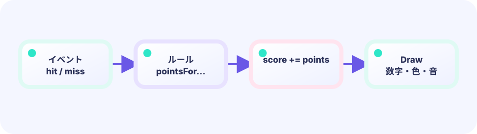

データ1個
ブロック1個は struct（構造体）。「ブロック1個分の道具箱」だと思ってください。位置（x, y）や壊れたか（alive）といった、そのブロックに関する情報をひとまとめに入れておく箱です。絵はあとから Draw で描けば十分です。
type brick struct★★★☆☆ / PLAYABLE
Pong の反射に、「同じ形のブロックがたくさん」が加わります。1個ずつ変数を増やさず、配列（スライス）でまとめて管理するのがポイントです。
はじめて読む人へ
[]は順番付きの箱、[][]は行と列の方眼紙。全部のbrickが消えたらwinがclear状態を立て、次のDrawで結果画面を出します。
このページの1本
説明と次のコードを対応させてから、ゲームで変化を確かめよう。
if remaining == 0 { state = Win }i番目を全部描く
iは「何番目のブロックか」を表します。forループで0番目から最後まで順にDrawすれば、同じ描画ルールをたくさんのブロックへ使い回せます。
for i := range blocks {
if blocks[i].Alive {
drawBlock(blocks[i])
}
}同じ STATE、4つの DRAW
Updateが作った同じ game を、ASCII、ワイヤーフレーム、ドット絵、美麗なスプライトの4通りで描けます。4分割画面へ同時に描いても、Update・入力・物理は一つのままです。DrawはUpdateの直後に必ず呼ばれる相棒ではなく、状態を読む差し替え可能な投影です。
ゲームの状態境界は LEVEL 01 と同じです。ルールはUpdate、Drawの描き方は自由です。ここでは反射・ブロック・体の伸びなど、新しい部品だけを足します。見た目も当たりも図形のままです。


PLAYABLE / WEBASSEMBLY
パドルでボールを返し、色つきブロックを消していきます。ライフは3です。
DEEP DIVE / MANY OBJECTS
ブロックは「位置」と「まだ生きているか」を持つ小さなデータです。それをスライスに並べ、毎フレーム同じループで調べます。同じルールを何回もくり返すのが、複数オブジェクトの基本です。
ブロック1個は struct（構造体）。「ブロック1個分の道具箱」だと思ってください。位置（x, y）や壊れたか（alive）といった、そのブロックに関する情報をひとまとめに入れておく箱です。絵はあとから Draw で描けば十分です。
type brick struct二重ループで行と列を作り、スライスへ append します。48個でもコードは増えません。
bricks []brickボールと重なったブロックだけ alive = false。描画も更新も、生きているものだけ見ます。
alive = falseTRY IT / MANY OBJECTS
12個のブロックは同じ配列の要素です。タップで alive を false にし、スコアを足します。
盤面の右側にある数値欄（残ブロック、得点）へ表示します。残ブロックは data-lab-alive、得点はその隣の値です。
TRY IT · GO
bricks[row][col] = alive if hitBrick { bricks[r][c] = false; score++ } if allClear() { win() }
—
THE GRID RECIPE
for row := 0; row < 6; row++内側for col := 0; col < 8; col++位置は x = 22 + col * 56、y = 90 + row * 32。ここで 22/90 は左上の原点、56 はブロック幅＋隙間、32 は高さ＋隙間です。表計算のセルと同じ考え方です。
IN THE REAL GAME
ボールを動かしたあと、全ブロックを順に調べます。当たったら壊して反射し、そのフレームはそこで打ち切ります。
このレッスンでは反射を簡単にするため、当たったらいつも ballVY = -ballVY（上下反転）だけにしています。横から当たったときも同じなので物理的には雑ですが、ブロック崩しの入門ではよく使う割り切りです。面のどちらに当たったかで vx / vy を選び分けるのは、あとのチャレンジ向きです。
全部のブロックを壊すと？ 生きているブロックが0個（aliveBrickCount() == 0）になったとき、本体のコードは「クリア画面」を出す代わりに *g = *newGame() でゲーム全体を初期状態に戻し、新しい面をすぐに始めます。上のラボにある win() はこの「クリアとして扱う」部分を短く表した例で、実際のゲームでは画面はそのまま次の面へ切り替わります。
for i := range g.bricks {
b := &g.bricks[i]
if !b.alive {
continue
}
if hitBrick(g.ballX, g.ballY, b) {
b.alive = false
g.score += 10
g.ballVY = -g.ballVY
break
}
}TODAY — まずここを見る
下のコードがこのゲームの全部です（図形だけで動いています）。コピーして手元で開けます。その前に、上の「まずここを見る」3つだけ追ってください。
package main
import (
"fmt"
"image/color"
"math"
"github.com/hajimehoshi/ebiten/v2"
"github.com/hajimehoshi/ebiten/v2/ebitenutil"
"github.com/hajimehoshi/ebiten/v2/vector"
)
const (
screenWidth = 480
screenHeight = 720
brickW = 50.0
brickH = 24.0
ballR = 10.0
)
type brick struct {
x, y float64
alive bool
row int
}
type game struct {
paddleX float64
ballX float64
ballY float64
ballVX float64
ballVY float64
bricks []brick
score int
lives int
}
func newGame() *game {
g := &game{
paddleX: screenWidth / 2,
lives: 3,
}
for row := 0; row < 6; row++ {
for col := 0; col < 8; col++ {
g.bricks = append(g.bricks, brick{
x: 22 + float64(col)*56,
y: 90 + float64(row)*32,
alive: true,
row: row,
})
}
}
g.serve()
return g
}
func (g *game) serve() {
g.ballX = screenWidth / 2
g.ballY = 590
g.ballVX = 3.4
g.ballVY = -4.5
}
func (g *game) movePaddle() {
if ebiten.IsKeyPressed(ebiten.KeyArrowLeft) || ebiten.IsKeyPressed(ebiten.KeyA) {
g.paddleX -= 6
}
if ebiten.IsKeyPressed(ebiten.KeyArrowRight) || ebiten.IsKeyPressed(ebiten.KeyD) {
g.paddleX += 6
}
if ebiten.IsMouseButtonPressed(ebiten.MouseButtonLeft) {
x, _ := ebiten.CursorPosition()
g.paddleX = float64(x)
}
if ids := ebiten.AppendTouchIDs(nil); len(ids) > 0 {
x, _ := ebiten.TouchPosition(ids[0])
g.paddleX = float64(x)
}
g.paddleX = math.Max(55, math.Min(screenWidth-55, g.paddleX))
}
func (g *game) bounceWorld() {
g.ballX += g.ballVX
g.ballY += g.ballVY
// 左右の壁
if g.ballX < 12 || g.ballX > screenWidth-12 {
g.ballVX = -g.ballVX
g.ballX = math.Max(12, math.Min(screenWidth-12, g.ballX))
}
// 天井
if g.ballY < 52 {
g.ballVY = math.Abs(g.ballVY)
}
// パドル
hitPaddle := g.ballVY > 0 &&
g.ballY > 630 && g.ballY < 650 &&
math.Abs(g.ballX-g.paddleX) < 64
if hitPaddle {
g.ballY = 630
g.ballVY = -math.Abs(g.ballVY)
g.ballVX += (g.ballX - g.paddleX) * 0.06
}
}
func (g *game) hitBricks() {
for i := range g.bricks {
b := &g.bricks[i]
if !b.alive {
continue
}
hit := g.ballX+ballR > b.x &&
g.ballX-ballR < b.x+brickW &&
g.ballY+ballR > b.y &&
g.ballY-ballR < b.y+brickH
if hit {
b.alive = false
g.score += 10
g.ballVY = -g.ballVY
break
}
}
}
func (g *game) aliveBrickCount() int {
n := 0
for _, b := range g.bricks {
if b.alive {
n++
}
}
return n
}
// --- ここから Update ---
func (g *game) Update() error {
g.movePaddle()
g.bounceWorld()
g.hitBricks()
// ボールが下に落ちた
if g.ballY > screenHeight+15 {
g.lives--
if g.lives <= 0 {
*g = *newGame()
} else {
g.serve()
}
}
// ブロックを全部壊したらクリア → 最初から
if g.aliveBrickCount() == 0 {
*g = *newGame()
}
return nil
}
// --- ここから Draw ---
func (g *game) Draw(screen *ebiten.Image) {
screen.Fill(color.RGBA{7, 20, 38, 255})
colors := []color.RGBA{
{255, 105, 79, 255},
{255, 145, 72, 255},
{255, 210, 72, 255},
{45, 226, 194, 255},
{71, 161, 220, 255},
{151, 113, 230, 255},
}
for _, b := range g.bricks {
if !b.alive {
continue
}
vector.DrawFilledRect(screen, float32(b.x), float32(b.y), brickW, brickH, colors[b.row], false)
}
vector.DrawFilledRect(screen, float32(g.paddleX-58), 640, 116, 14, color.RGBA{45, 226, 194, 255}, false)
vector.DrawFilledCircle(screen, float32(g.ballX), float32(g.ballY), ballR, color.White, false)
ebitenutil.DebugPrintAt(screen, fmt.Sprintf("SCORE %04d LIVES %d", g.score, g.lives), 160, 25)
ebitenutil.DebugPrintAt(screen, "ARROWS / DRAG", 184, 690)
}
func (g *game) Layout(_, _ int) (int, int) {
return screenWidth, screenHeight
}
func main() {
ebiten.SetWindowSize(screenWidth, screenHeight)
ebiten.SetWindowTitle("Breakout — Ebitengine")
if err := ebiten.RunGame(newGame()); err != nil {
panic(err)
}
}
WITHOUT A SLICE
変数名を増やしていくと、すぐに行き詰まります。数を変えるたびにコードを書き直すことになります。
WITH A SLICE
ブロックが10個でも100個でも、更新と描画のループは同じです。
YOUR FIRST RULE
games/core/breakout/main.go の Update でボールが落ちる g.ballY > screenHeight+15 の直前に、g.lives == 1 ならパドルを一度だけ広げる lastChance bool を Update 側で立てます。Draw はその旗を見て表示するだけ。go test ./... とローカル実行で最後のライフを確かめます。
FEEDBACK